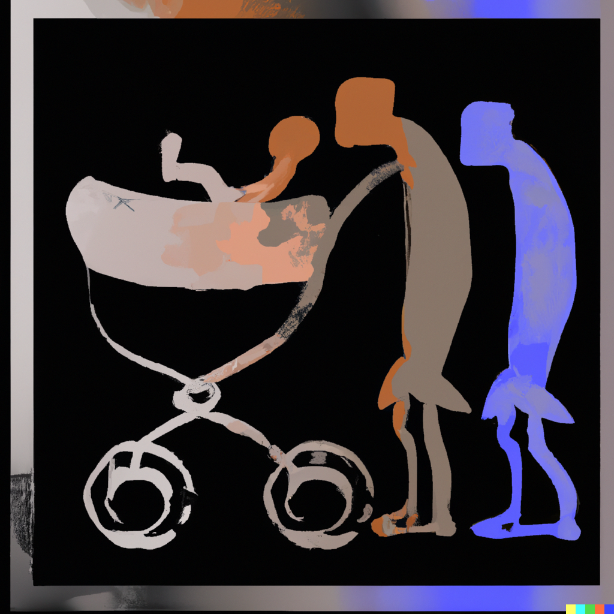

Interacting with Themes of Gender and Sexuality in The Argonauts by Maggie Nelson
'Surrealist painting that illustrates the complexities of gender within the framework of radical conformism'.
Before we met, I had spent a lifetime devoted to Wittgenstein’s idea that the inexpressible is contained—inexpressibly!—in the expressed... Its paradox is, quite literally, why I write, or how I feel able to keep writing... Lo, what I would say, were words good enough.
Conceptualizing the inexpressible in terms of the expressed—this quote had me thinking about the technical capabilities of DALL-E, a novel, generative AI that interprets the many crudely thought of expressions I come up with as images. So, what would I imagine a 'Surrealist painting that illustrates the complexities of gender within the framework of radical conformism' to look like? Do my preconceptions entail the inclusion of two pale figures suspended between paths? Maybe. How about the depiction of a clitoral-hangline-guitar? It's less likely. Can my prompt ever sufficiently capture 'the complexities of gender within the framework of radical conformism?' I don’t even know what “sufficient” means in this context, so probably not.
Similarly, The Argonauts presents a relatively dismissive stance on whether or not its “words are good enough” (Nelson 9). This sentiment is especially discernable throughout the opening few pages, in which Nelson dislodges the endurance of words to stay good enough forever. “Words change depending on who speaks them; there is no cure. The answer isn’t just to introduce new words (boi, cisgendered, andro-fag) and then set out to reify their meanings” (Nelson 14). Rather, it is the fundamental dependence on context that provides “the wings each word to fly” (Nelson 14).
Words alone aren't enough: this can be seen as a commentary on the limitations of language in capturing the nuances and complexities of queerness. Expounding on this notion, the traditional, anti-associative definition of queerness as being “the queerest of the queer” may not even fully encompass the diversity and fluidity that gender and sexuality occupy (Nelson 66).
So, is there a queerness in being... "ordinary?"
Nelson seeks to demonstrate how inappropriate it is to use the word "perversion" as a term of reproach by universalizing it in a way that still holds space open for queer family making.
'Digital art that illustrates how not having children is not conforming '
What sense does it make to align “queer” with “sexual deviance,” when the ostensibly straight world is having no trouble keeping pace? Who, in the straight world, besides some diehard religious conservatives, truly experiences sexual pleasure as inextricably linked to reproductive function? Has anyone looked at the endless list of fetishes on a “straight” porn website recently?
Queer theory traditionally asserts that queerness is fundamentally at odds with societal norms and values. Advocates of this position often frame their intentions as a rejection of heteronormativity, which proliferates the use of regulated outlets such as marriage and childrearing. Stable definitions of normative behavior need to be established, so that queer people can occupy the ‘transgressive’ end of the binary. In a sense, this fortifies the traditional, anti-reproductive sentiment, as the “perversion” of impotence challenges the reproductive imperative of heterosexuality. Commenting on the 2012 Pride intervention in Oakland, Nelson offers a disjuncture from the visions of ‘radical’, ‘anti-assimilatory’ speech. Revolutionary language is described as a sort of fetish, as “What is destructive to straight society—we know can never be commodied and purged of rebellion” (Nelson 31). Nelson is unable to “share in this fantasy of attack”, stating that “our diagnosis was similar, but our perversities are not compatible” (Nelson 31).
However, the degree to which this anti-assimilatory logic seeps its way into queer politics is plainly demonstrated when Nelson’s friend states “Wow… I’ve never seen anything so heteronormative in my life” upon seeing a mug with a Christmas family portrait plastered on it (Nelson 18). Having been called out for her proximity to the nuclear familial unit prompts Nelson to reflect.
But what about it is the essence of heteronormativity? That my mother made a mug on a boojie service like Snapfish? That we’re clearly participating, or acquiescing into participating, in a long tradition of families being photographed at holiday time in their holiday best? … What about my pregnancy—is that inherently heteronormative? Or is the presumed opposition of queerness and procreation (or, to put a finer edge on it, maternity) more a reactionary embrace of how things have shaken down for queers than the mark of some ontological truth?
Pregnancy as a radical act?
Throughout the essay, Nelson describes this desire to transcend the overdetermined nature of thinking in terms of male/female, transgressive/normative, perverse/reproductive, etc. Her most salient disruption of these binaries comes in the form of reframing pregnancy, an act that symbolizes the ultimate conformity, as an inherently queer experience. To understand her position, let’s examine the following publication:

No Future: Queer Theory and the Death Drive by Lee Edelman
In No Future, Lee Edelman argues that “queerness names the side of those not ‘fighting for the children,’ the side outside the consensus by which all politics confirms the absolute value of reproductive futurism.” Fuck the social order and the Child in whose name we’re collectively terrorized; fuck Annie; fuck the waif from Les Mis; fuck the poor, innocent kid on the Net; fuck Laws both with capital Is and with small; fuck the whole network of Symbolic relations and the future that serves as its prop.
What does this all mean? How does Edelman define queerness? Here's what I think:
- Edelman argues that queerness is positioned against the realm of politics through its threat to reproductive futurism, which is the idea that society should focus on the continuation of life through reproduction.
- He asserts that the political arena is where this idea is perpetuated and preserved. Queer people have entered this arena in an attempt to achieve legal rights and normalization.
- However, in doing so, they are regulated and required to submit to the all-powerful figure of the Child (not physical children per se), which represents the future and upholds the coherence of the Symbolic (the social order and the system of meanings and values that shape our understanding of the world and our place in it).
- Edelman is not concerned with prohibiting the act of childbirth. However, being subjected to the Child drastically changes one’s normal state, which undoes the coherence of the self.
So, during pregnancy, aren't mothers completely isolated from their “normal” self, instead becoming increasingly subjected to the demands of a foreign body from within? Nelson reminds us that the child (the real child this time) would “eventually slide out of me and be its own body (Nelson 89). There are striking parallels between physical childbirth and the conditions in which Edelman's antisocial notion of queerness is formulated. Both entail the subjection to a presence who entails “a radical intimacy with—and radical alienation from—one’s body?” (Nelson 19). She takes this one step further by examining the physical alienation from one's body in this widely graphic paragraph.
Many women describe the feeling of having a baby come out of their vagina as taking the biggest shit of their lives... Constipation is one of pregnancy’s principal features: the growing baby literally deforms and squeezes the lower intestines, changing the shape, flow, and plausibility of one’s feces... Then, all through my labor, I could not shit at all, as it was keenly clear to me “that letting go of the shit would mean the total disintegration of my perineum, anus, and vagina, all at once. I also knew that if, or when, I could let go of the shit, the baby would probably come out. But to do so would mean falling forever, going to pieces.
Finally, I won’t delve too deeply into the intricacies butt-related writing, but consider Leo Bersani’s “intolerable image of a grown man, legs high in the air, unable to to refuse the sexual ecstasy of being a woman” on page 212 of Is the Rectum a Grave with DALLE’s rendering of childbirth. Notice any similarities?
'Impressionist oil painting of the intolerable image of a grown man, legs high in the air'
'Impressionist oil painting of the process of giving birth'
This representation of "sodimitical maternity", which equates the experience of childbirth with the sense of alienation derived from queerness, ultimately ties back to the central tenet in The Argonauts, this sort of push for ‘homonormativity’ (Nelson 67). According to this phenomenon mainstream LGBTQ+ culture and politics focus on assimilation and acceptance into dominant societal norms, rather than challenging and subverting those norms.
2 Comments
conservative_household123 18 Minutes ago.
Boo, you suck! I thought The Argonauts was an interesting read, but I found myself unfamiliar and ultimately displeased with many of the author's liberal ideologies and views on gender and sexuality. All my life, I have been raised to believe in the importance of traditional family values and the biological differences between men and women. Overall, the book raises important and thought-provoking ideas, but I ultimately disagree with its overall message.derek_cool_reformed Just now.
Look, man, I definitely understand where you are coming from. I am not gonna lie, at first, I found many ideas in The Argonauts exceedingly difficult to come to terms with. It’s probably the hardest book I had to read in high school, not only because of the language but also because of the content as a whole. Like you, I grew up in a household characterized by this Confucian adherence to traditional values and a respect for authority. My parents come from a country where the National Society for Psychiatry only removed homosexuality from its list of mental disorders about a decade ago. Practices such as conversion therapy are still popular in both public and private hospitals situated in less urban areas. So, all my life, I was told two things: stay away from drugs (fair enough) and, jokingly, not to be gay. It was only when I found a girlfriend that my parents stopped telling me the latter. As such, I always believed in the binary nature of normative/transgressive that Nelson spends so much effort trying to void. Being a teenager and having grown up in America, I always found myself more accepting than my parents although I firmly positioned myself on the side of “normative.” I learned that this makes no sense because our entire system of categorization makes no sense. “Words aren’t enough” - perhaps I’m rambling because I can’t find the words to effectively convey all my reactions to the book. However, maybe you can just do what I did at the start: read the book as a simple memoir of how the author explores themes of family and love. Who knows, you might come around!